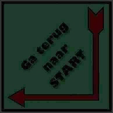

Tijdens mijn vakantie naar Riga heb ik een groot deel van mijn downtime besteed aan het vastleggen van interacties tussen Govert, een goede vriend van mij, en een AI-bestuurde versie van Dobby van de Harry Potter franchise. Deze bizarre jongen had ellenlange verhalen te vertellen over de verschillende manieren waarop hij in een slechtere fase van zijn leven (met verschillende mate van humor) de huis-elf heeft gemarteld.
Ik ben niet helemaal onschuldig van deze misdaden; ik vond het zelfs extreem grappig. Vandaar deze pagina.


De onafgemaakte "tournament arc". Deze was nodig wegens gebrek aan officiele Dobby Martel content.


...einde?
